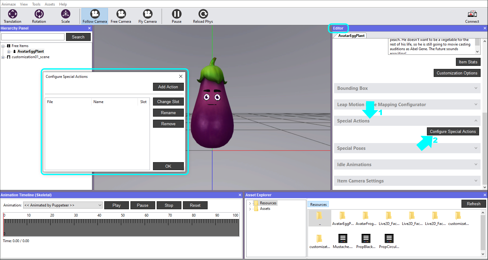
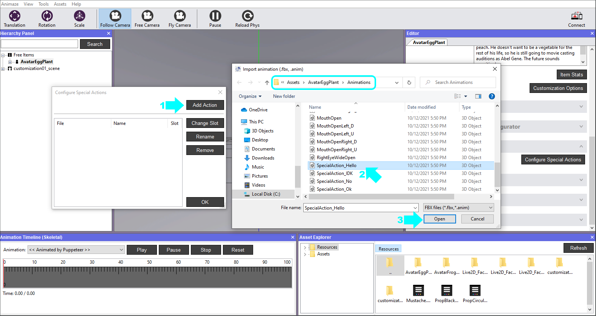
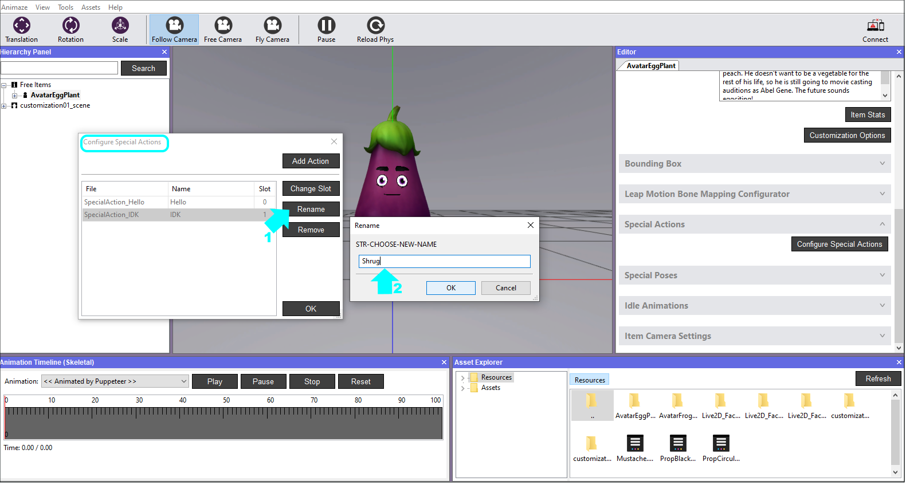
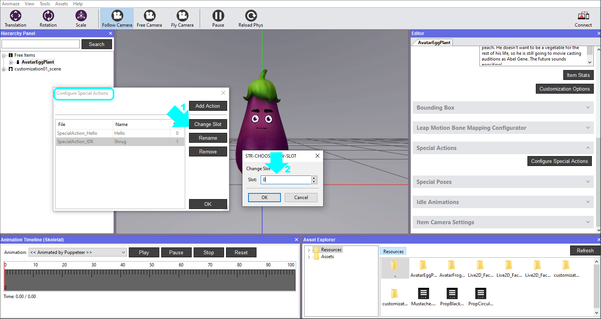
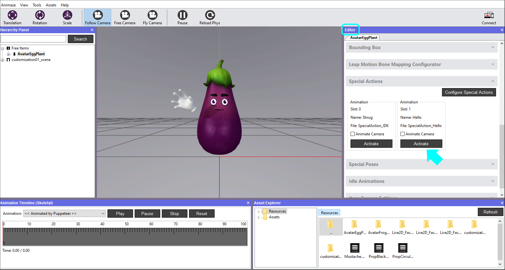

Configure avatar Special Actions
Special Actions are user triggered animations and are not part of the face tracking retargeting system. Think of special actions as cool dance moves that you want your avatar to display.
The possibilities of Special Actions are limitless, but they must follow this rule: special actions animation should be exported for every bone in the hierarchy.
The format is *.fbx, just as all the other animations, and they can be added, rearranged and removed within the Animaze Editor.
Steps to configure Special Actions:
1. Open Animaze Editor
2. In the Editor Panel, click on Special Actions bar to expand it and hit the Configure Special Actions button, which will open the configuration window.

2. Click on the Add Action button, then select the Special Action animation from the source folder that contains the *.fbx files and hit Open.

We added two Special Actions to exemplify the configuration further.
3. While inside the Configurator window, you can Rename the actions. Select the Special Action you want to rename in the Configurator and then click on the Rename button. Write the desired name and click OK.

4. Select the Special Action you want to reorder in the Configurator and then click on the Change Slot button. Put the desired slot number and click OK. Close the Configurator when done with all your additions, renamings etc.

Now let’s play the added Special Actions.
5. In the Editor Panel, click on the Activate button of the Special Action and watch the avatar perform it in the Viewport.

6. Save the avatar in the Hierarchy Panel when you are done.

You’ve successfully configured the Special Action :)